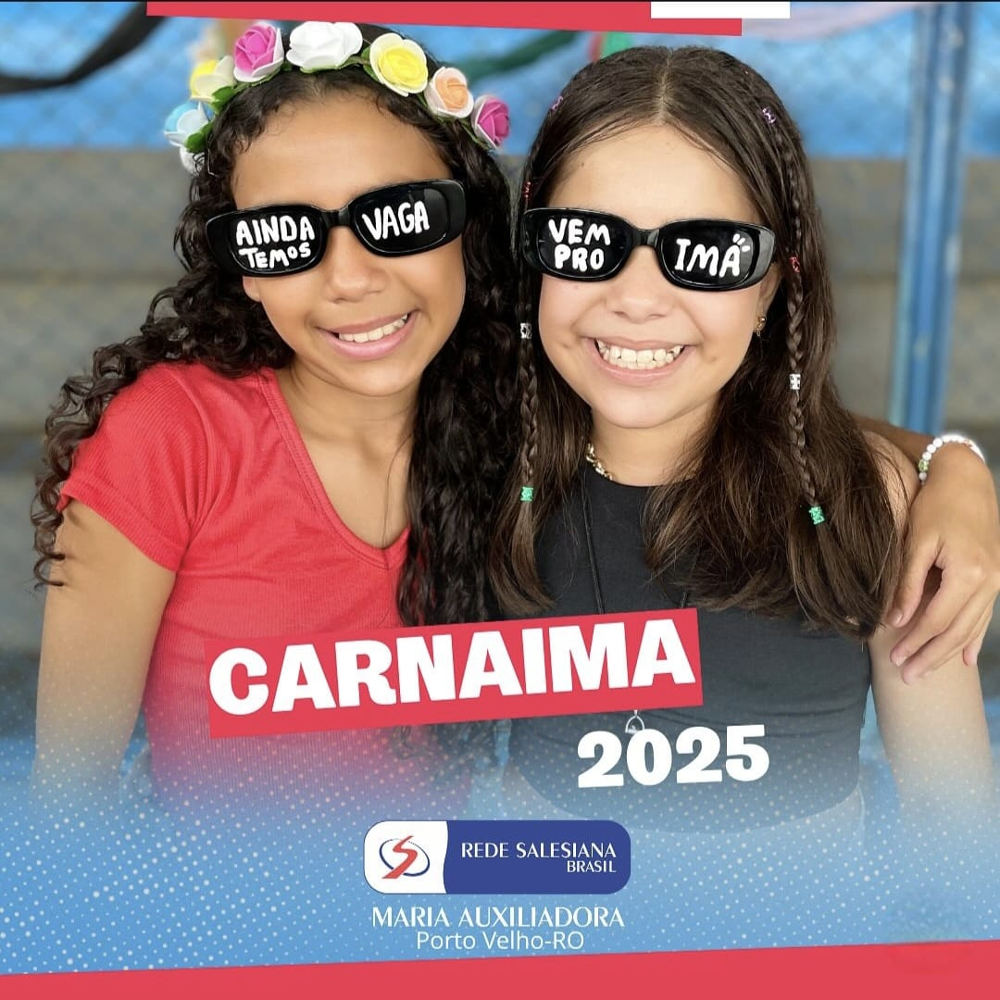

CarnaIMA
Nesta sexta-feira, dia 28 de fevereiro, aconteceu o CarnaIMA, organizado pela turma do terceiro ano em conjunto com a pastoral da escola. Uma manhã de brincadeiras e esportes, reunindo todas as turmas da escola para competir nas modalidades de vôlei, queimada e FIFA.
Os esportes proporcionaram partidas emocionantes, promovendo rivalidades saudáveis entre os alunos, além de um forte espírito esportivo.
As turmas campeãs das modalidades foram:
- Volei(cat.A): 8° Serie
- Volei(cat.B): 1° Serie
- Queimada(cat.A) 8° Serie
- Queimada(cat.B) 1° Serie
Além das brincadeiras organizadas pela terceira série, também houve uma competição de fantasias na qual os alunos da segunda série ganharam. Fabrine, Guilherme e Gilberto, fantasiados de soldados, foram os vencedores.